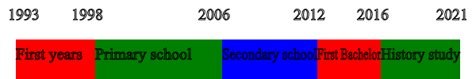

About me
Portfolio
contact
In 2019, I started building small scripts as part of the 'codeclass' project from Lyceo. Two years later I began building websites and I decided to become a programmer! Before that, I studied to become a historian, and a history teacher. Here's a timeline I created to show you what I did:
I made this timeline with one of my projects, the timeline-maker!(You can find it in my portfolio, feel free to have a go at it!). Since 2021, I have taught myself how to use HTML, CSS, JS, GIMP2, Python and TypeScript. Besides that, I have currently achieved the following:
I have also held several jobs in-between my studies. Those and more can be found on my curriculum Vitae.
In this project, I created a timeline-maker using the canvas element. Users can enter a starting and ending year per bar, and click on the 'create' button to make their own timeline!
In this project, I created a timeline-maker using the canvas element. Users can enter a starting and ending year per bar, and click on the 'create' button to make their own timeline!
In this project, I created a timeline-maker using the canvas element. Users can enter a starting and ending year per bar, and click on the 'create' button to make their own timeline!